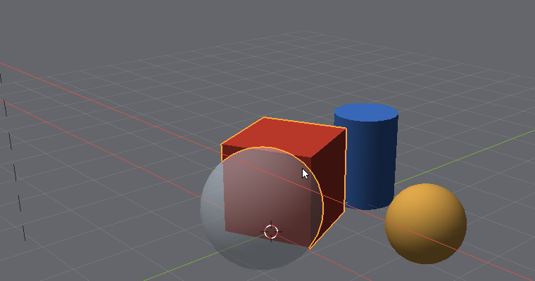
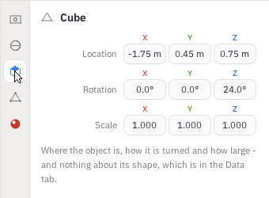

Three keys do most of the work, as in Blender: G to grab and move, R to rotate, S to scale.
Choose an object and press G. Without pressing a button, move the mouse: the object follows it. Click, or press Return, to put it down. Esc or a right click puts it back where it was.
R turns the object as you move the mouse around it, and S makes it bigger or smaller as you move away from it or towards it.
While moving, turning or sizing, press X, Y or Z to hold the change to that axis only - a line of the axis's colour shows it. Shift X holds it to the other two: everything but X.

G, then X: the cube follows the pointer along the red line, the X axis, and nowhere else.
Type a number while moving: G X 2 Return moves the object two metres along X. R Z 9 0 turns it a quarter turn about Z, and S 2 doubles it. - makes the number negative. The top left of the view says what is happening as you type.
The Move, Rotate and Scale tools on the left put handles on the chosen object: an arrow, a ring or a small cube for each axis. Drag one and only that axis changes.
The Object tab shows the chosen object's Location, Rotation and Scale, one box for each of X, Y and Z. Click a box and type a number, then Return to keep it, Esc to leave it as it was, or Tab to keep it and go on to the next box. Drag across a box instead of clicking to slide its number up and down.

The Object tab: where the chosen object is, how it is turned and how big.
Location is in metres, from the middle of the scene; rotation in degrees; scale is a factor, where 1 is the size the shape was made.
The Data tab has the numbers a shape is made from: a cube's Size, a sphere's Segments, Rings and Radius, a cylinder's Vertices, Radius and Depth, and so on. Changing these remakes the shape; changing Scale in the Object tab only stretches it. For building things to size, the Data tab is usually what you want: a wheel is a cylinder of radius 0.38 metres, not a cylinder scaled by 0.38.
Round shapes are made of flat faces. Shading, in the Data tab, is Flat to see the faces or Smooth to hide them. A smooth sphere or cylinder with eight sides or more is rendered as a perfect curve, however coarse it looks in the Solid view.
Some objects in the samples are meshes: shapes made of their own triangles rather than from a few numbers - the car's curved body, a tyre, the plane's wings. They were turned on a lathe, lofted through sections and bevelled by the program that made the samples. In Cafesa3D you can move, turn, size and colour them like anything else; shaping one point by point is what Edit mode will do, when it comes.